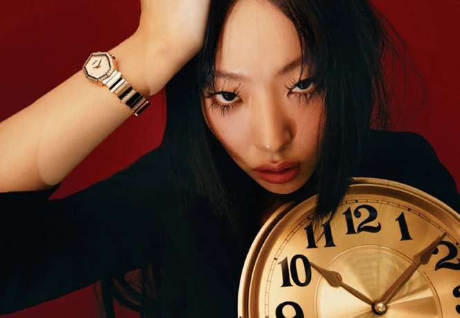

'시공간을 초월하는 아름다움이란'

기하학적 형태가 돋보이는 ‘젬 디올’ 반지와 ‘젬 디올’ 워치는 레이어드 방식에 따라 다양한 스타일링이 가능하다.

기하학적 형태가 돋보이는 ‘젬 디올’ 반지와 ‘젬 디올’ 워치는 레이어드 방식에 따라 다양한 스타일링이 가능하다.
‘젬 디올’ 워치는 독창적인 디자인의 팔각형 케이스와 지층처럼 차곡차곡 쌓인 브레이슬릿이 조화롭게 어우러진다.
빅투아르 드 카스텔란은 크리스챤 디올이 꾸뛰르 컬렉션에 사용하던 화려한 원단 더미에서 영감을 받아 ‘젬 디올’ 컬렉션을 완성했다.‘젬 디올’ 워치는 독창적인 디자인의 팔각형 케이스와 지층처럼 차곡차곡 쌓인 브레이슬릿이 조화롭게 어우러진다. ‘젬 디올’ 귀고리는 간결한 디자인으로 언제 어디서나 부담 없이 착용할 수 있다.